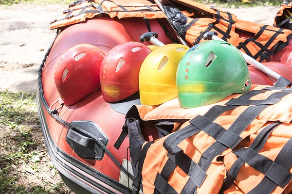

Tudo começou com quatro irmãos unidos por uma paixão: o rafting. Desde jovens,
encontramos nas águas
uma forma de nos divertir, enfrentar desafios e criar momentos inesquecíveis
juntos.
Com o passar dos anos, percebemos que essa paixão poderia se tornar algo maior.
Assim nasceu a Raft
Rush, com o sonho de proporcionar a outras pessoas as mesmas experiências
especiais que vivemos
juntos.

Nossa iniciativa é proporcionar experiências novas, divertidas e
inesquecíveis.
Queremos que cada pessoa possa sair da rotina, explorar a natureza e criar boas
lembranças enquanto
vive a emoção do rafting. Mais que uma aventura, queremos oferecer momentos
de
superação, conexão e diversão, para que cada
visitante descubra novos limites, enfrente seus medos e aproveite cada instante
ao lado de pessoas
especiais..